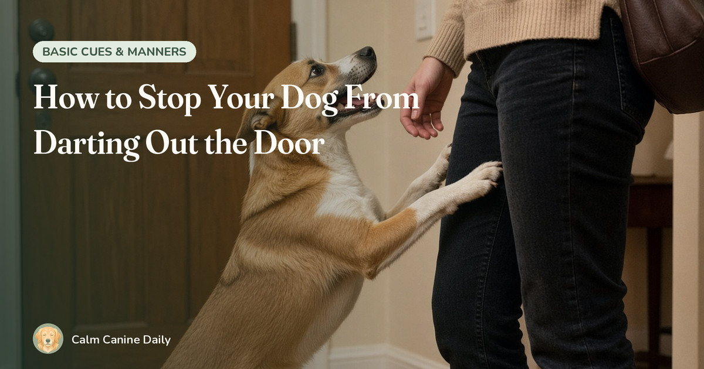

How to Stop Your Dog From Darting Out the Door (A Safer Wait)

The short answer. Keep a leash, baby gate, or closed door on every exit until the skill is solid. Teach wait on an inside door first: open an inch, close it if they step forward, and pay stillness. Add a release word such as “free” — the open door never means go. Then practice the front door on leash, and use a gate when guests or deliveries arrive.
If you want to know how to stop a dog from darting out the door, treat the open front door as a safety problem, not a manners preference. The yard, the sidewalk, and the squirrel all pay the dash. This page is about the threshold: your dog bolts when the door opens. It is not the same as jumping on guests, and it is not the same as the first 30 seconds after you walk in.
This is a researched how-to, not a hands-on trial of this plan on a panel of dogs, and not a reason to leave a front door unmanaged.
Educational content only. Some links on this page are affiliate links. If you purchase through one, we may earn a commission at no extra cost to you. We do not impersonate or speak for any course creator.
About this article. Educational tips from Calm Canine Daily for everyday US owners. This is not veterinary advice, a diagnosis, or a promised result. We are not a certified training practice and we do not claim CPDT or DVM credentials. If you are worried about a bite risk or a situation you cannot manage safely, pause and get qualified in-person help.
Who this plan is for: owners whose dog dashes when a door opens, and who can use a leash or a baby gate while they teach a wait. Who this is not for: a dog who becomes unsafe at the door — hard staring, snapping, or a body slam you cannot manage — or a panic-level problem. That needs a veterinarian or a certified in-person professional, not an unmanaged exit.
Key takeaways
- An open door is a safety issue. Manage it with a leash, a baby gate, or a closed door until the skill is solid.
- Teach wait on an inside door first, where a mistake is not a run toward the street.
- The open door is never the release. A word such as “free” is.
- Practice the front door on leash. Use a gate when guests or deliveries arrive.
- Yelling or grabbing the collar is not a plan. Stillness is what gets paid.
In this article
- Why door darting keeps working
- What not to do
- How to stop a dog from darting out the door: manage first
- Teach a wait on an inside door
- Add a release word, then move to the front door
- Practice with guests and deliveries
- When to get extra help
- FAQ
Why door darting keeps working
From your dog’s point of view, darting out the door is an excellent idea. The backyard, a sidewalk smell, a squirrel, a passing dog — all of those are real payoffs. If the dash has worked even a few times, the habit has a reason to stay. “Just be faster at the handle” is a thin plan. A wait is an impulse-control skill: see the gap, stay put, get paid, then leave only when you hear the release. Until that skill is reliable, the environment has to do the heavy lifting.
What not to do
Don’t yell as they shoot past you. A sharp “hey!” may add arousal to a dog who already thinks the doorway is a sport.
Don’t make grabbing the collar your only plan. Some dogs learn to dodge the hand and go anyway.
Don’t test an untrained wait at a busy street. Start on an inside door, then move to the front door on a leash.
Don’t leave the door ajar “just this once.” One successful dash pays the habit more than a week of tidy practice.
How to stop a dog from darting out the door: manage first
Until the wait is solid, every exit needs a physical plan: clip a leash on before you open the front door, even to take out the trash; use a baby gate in the hallway, or close an interior door, so your dog cannot sprint straight to the threshold; and decide who answers the door, so one person can hold the dog while another talks to the Amazon driver. Use the same rule at sliding doors and back doors to an unfenced yard: leash or gate first, then the opening.
Management is not a failure to train. It is how you keep a mistake from becoming a dog in the street.
Teach a wait on an inside door
Start with a door that leads to a hallway, a bathroom, or another room — not to the yard or the sidewalk.
- Stand at the closed door with your dog on leash, or with your body blocking the gap in a safe room.
- Reach for the handle. If they stay still, mark it (“yes”) and pay a treat at your side, not through the doorway.
- Open the door an inch. If they step forward, close it calmly, reset, and try a smaller opening.
- If they stay put while the door is cracked, mark and pay, then close the door and pause.
- Gradually open it wider, still paying stillness, still closing it if they move through.
Keep sessions short — a handful of good reps. The skill is “the door can move, and I stay,” not a long formal stay. If they cannot hold even an inch, use a less exciting inside door, or pay as you barely move the handle, then try the crack again.
Add a release word, then move to the front door
Once your dog can wait at an inside door while it opens, add a release word such as “free” or “okay.” The sequence is: wait, door opens, they still wait, you say “free,” then they may walk through. The open door never means go. Pay the wait, and at first pay the release too, so leaving with permission is also a win.
Then move to the front door, on leash. Clip the leash before you touch the handle. Ask for the wait and open a little. If they surge, close the door and reset. If they hold, mark, pay, and only then release and step out together. Practice when nothing exciting is on the porch — a quiet mid-morning, not the moment the UPS truck pulls up. If the front door is too hard, go back to the inside door for a day.
Wait, here, means “do not pass the threshold until I release you,” not a formal stay until you return. Use one word in the household.
Practice with guests and deliveries
Guests and deliveries are the real test, because the door opens while your attention is split. Before you open the door, leash your dog or put them behind a baby gate. Ask for the wait, or park them on a mat if you already have a place cue. Open the door only when they are held, gated, or waiting, then release them only if the scene is safe.
If you know a delivery is coming, move your dog away first. You can also ask drivers to leave the package and skip the doorbell when the app allows it. Do not use this moment as a surprise exam for an untrained wait. For barking at the chime itself, see how to stop dog barking at the doorbell. For the zoomies when you walk in, see your first 30 seconds home.
When to get extra help
Get a veterinarian involved if darting started suddenly, or if it comes with signs of pain, panic, or disorientation. Get a qualified trainer or behavior professional involved (CPDT-KA or CBCC-KA are one useful filter) if your dog becomes unsafe at the door or you cannot find an inside door where they can think. An article is not enough in those cases, and neither is an online course. If there is a bite risk or a panic-level problem, skip the course and get in-person help.
FAQ
How do I stop my dog from running out the door?
Manage every exit first with a leash, a baby gate, or a closed door. Then teach a wait on an inside door: open an inch, close it if they step forward, and pay stillness. Add a release word so the open door never means go, and only then practice at the front door, on leash.
What is the difference between wait and stay?
Stay usually means “hold this position until I come back.” Wait, as used here, means “do not go through that door until I release you.” Use one word in the house, and never let the open door be the signal to go.
Should I use a baby gate while I train door manners?
Yes. A baby gate, a closed interior door, or a leash keeps a real exit safe while the wait is still new. Take the gate down only when the wait is reliable on leash at the front door — and use it again when guests or deliveries make the scene harder.
How do I stop door darting when guests come over?
Do not test the wait as the guest reaches for the handle. Leash your dog or park them behind a gate first. Greet your guest, and release your dog only when the doorway is safe. Ask guests not to fling the door wide and call the dog through.
Is door darting dangerous?
It can be. An open door can lead to a street, a parking lot, or a lost dog. Manage every exit, teach a wait, and get help if you cannot keep the door safe on your own.
Related guides
- How to Stop Your Dog From Jumping on Guests
- How to Stop Your Dog From Barking at the Window
- Why Your Dog Pulls on the Leash
- Brain Training for Dogs review
- More cues and manners guides
- Get the free 7-Day Calm Dog Checklist
Sources
Vendor facts about Brain Training for Dogs, including the “open sesame” game as described on the sales page (“patience and calmness despite an open door”), the bonus course covering jumping, the advertised $67 price, and the 60-day guarantee, are from the official pages as checked on November 21, 2026: braintraining4dogs.com/get-btfd and braintraining4dogs.com. Confirm current terms at checkout.